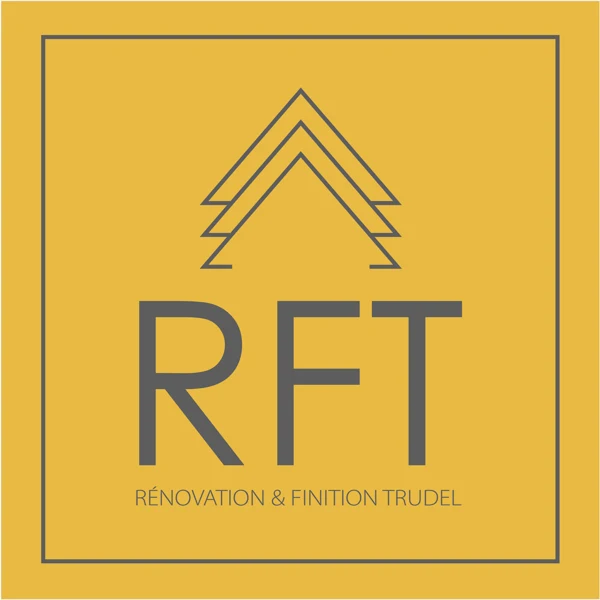
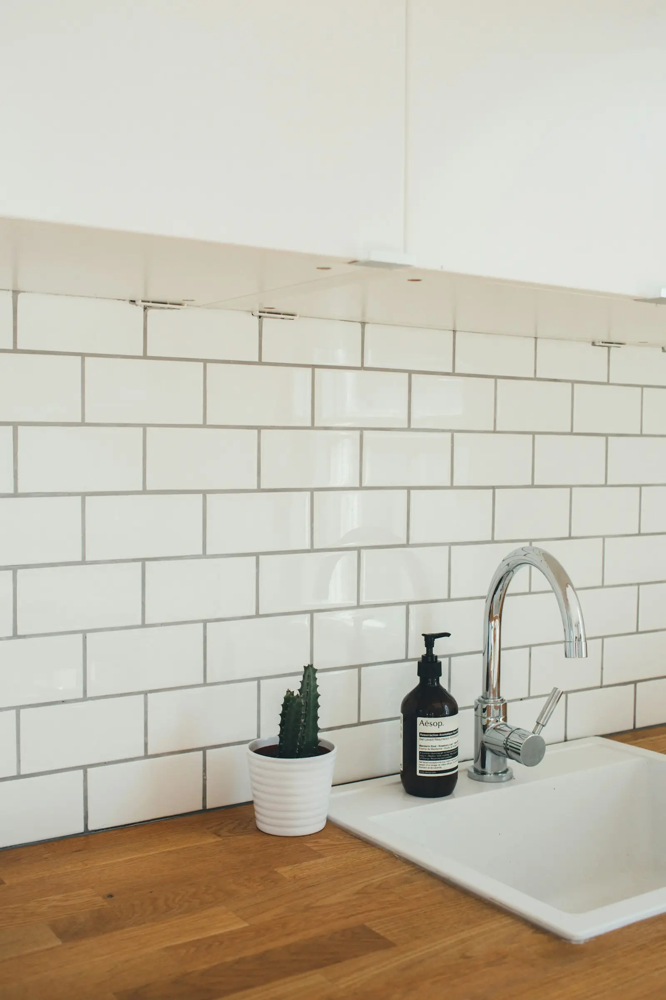
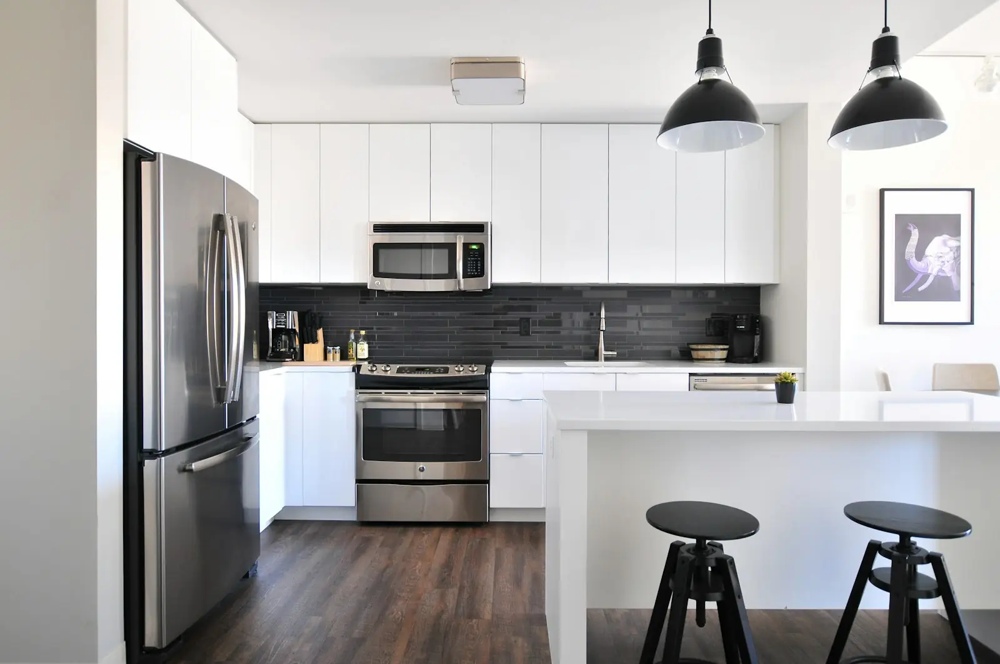
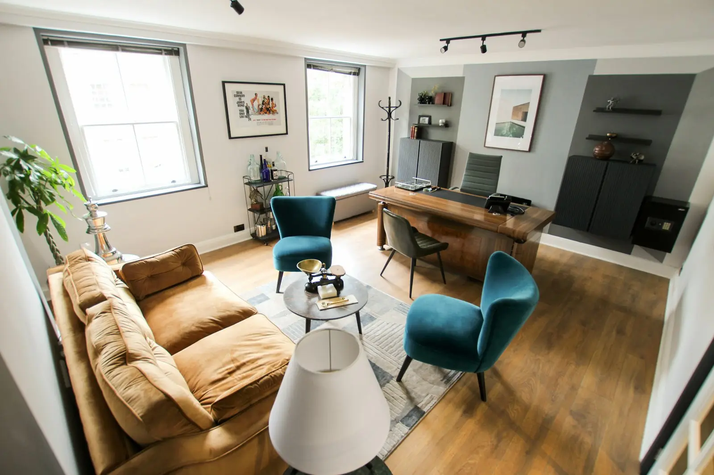
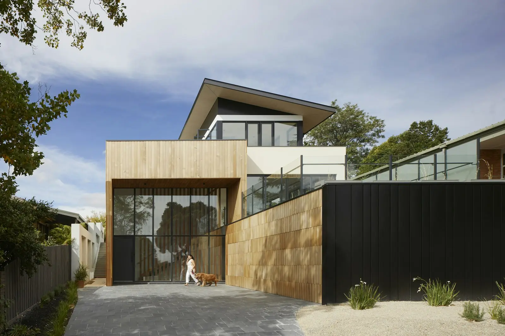

418-507-6358Céramique, planchers chauffants, douches, cuisines et patios. Rénovation et finition intérieure à Saint-Tite et dans les environs.*
Demander une soumissionLicence RBQ 5796-7366-01



Planchers, murs, dosserets.
Pose sous céramique.*
Douches en céramique sur mesure.*
Finition et dosserets.*
À détailler avec l'entreprise.*

Photos d'illustration — à remplacer par vos réalisations (Facebook).
Envoyez quelques photos de la pièce et vos dimensions — on vous revient avec une soumission.*
418-507-6358
rftrudel@gmail.com
500, rue Frigon, Saint-Tite (QC)
Avis Google (5,0 · 1 avis) →